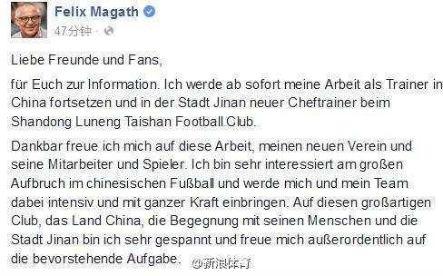

特朗普成为共和党候选人最让人兴奋的一点：看共和党的大佬们人格分裂。你看Ryan Paul说特朗普说的话是教科书式的种族歧视，然后接着说支持特朗普；Newt Gingrich几天前还在电视前说特朗普的言论不可原谅（ 网页链接 ），今天又发推特说"Trump is learning, a gifted amateur, will win"。
现在提起公牛王朝，好像每场碾压对手一样，其实回忆起来也并不总是如此。我记得有一年东部决赛公牛和步行者都打了七场，而那支步行者我就认识雷吉米勒一个人，那时候还已经很老迈了。有一年决赛对犹他爵士打得很艰苦，客场输了两场，好几个主场都上来落后20分，第三节爆发才追回来最后险胜。
这种强硬加魔鬼训练的教练，在中超容易被球员集体做掉。不看好。@新浪体育:【前德甲名帅宣布将执教鲁能】前德甲沙尔克04，沃尔夫斯堡主帅马加特通过个人社交软件脸书宣布，自己将执教中超山东鲁能俱乐部。更多详情：马加特:能在中国执教很兴奋 
 网页链接 ），今天又发推特说"Trump is learning, a gifted amateur, will win"。
网页链接 ），今天又发推特说"Trump is learning, a gifted amateur, will win"。